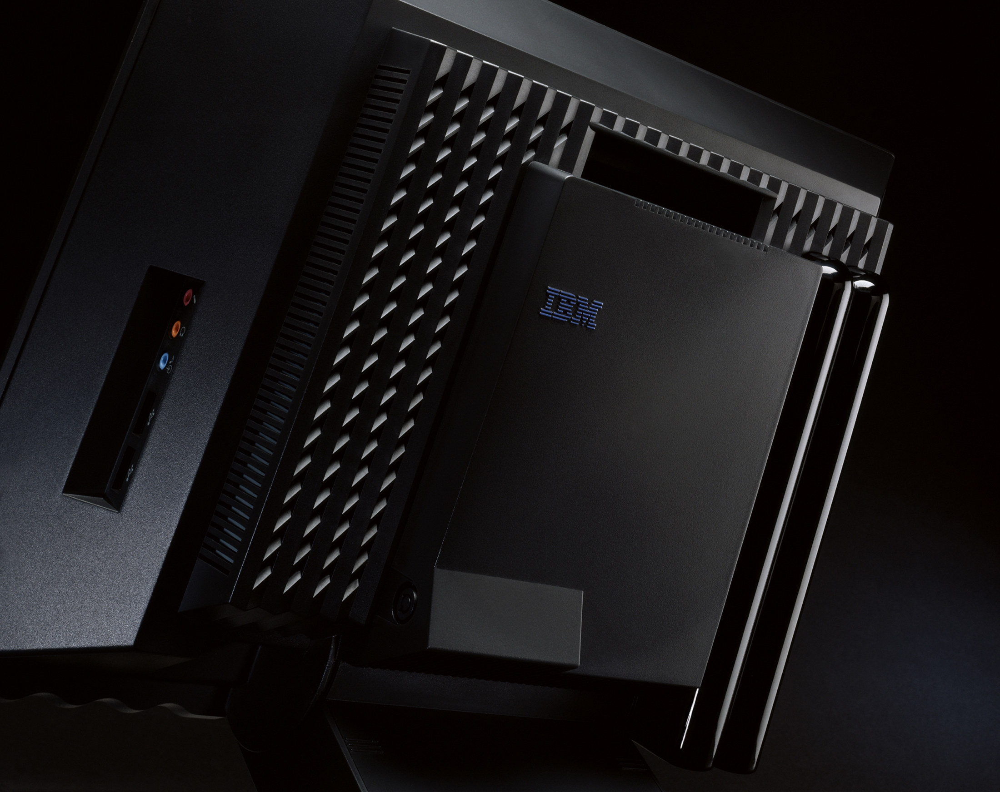
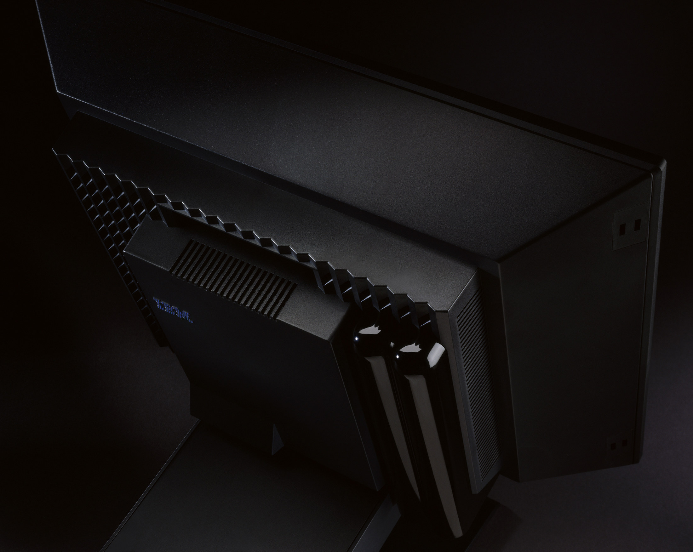
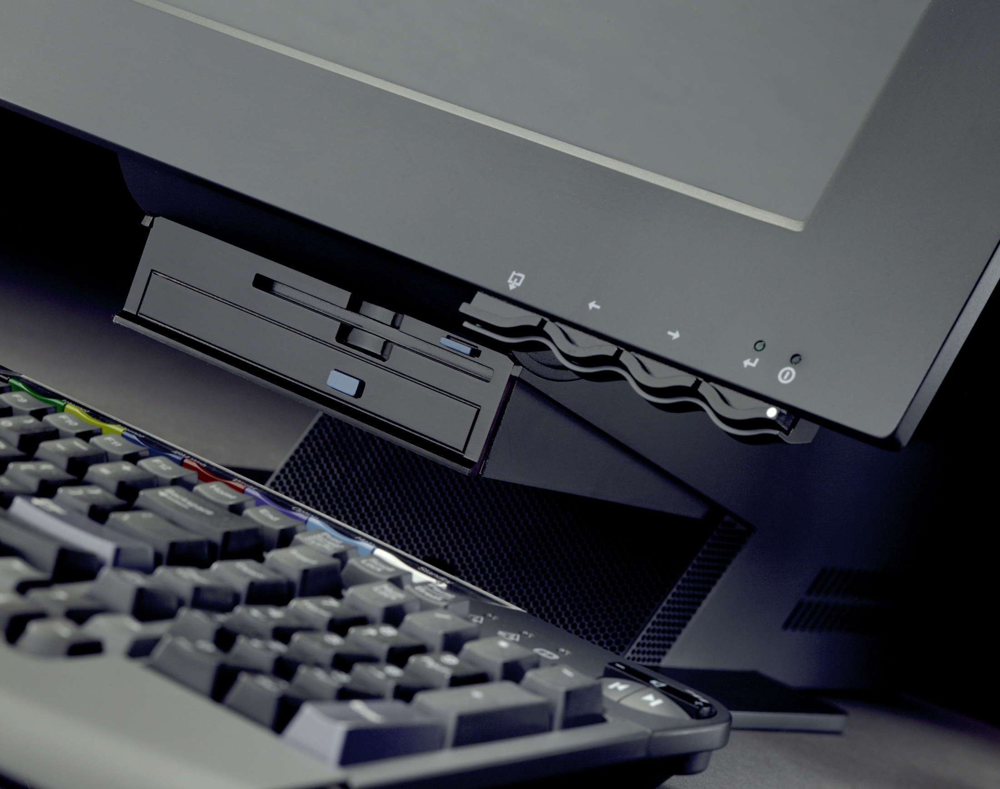
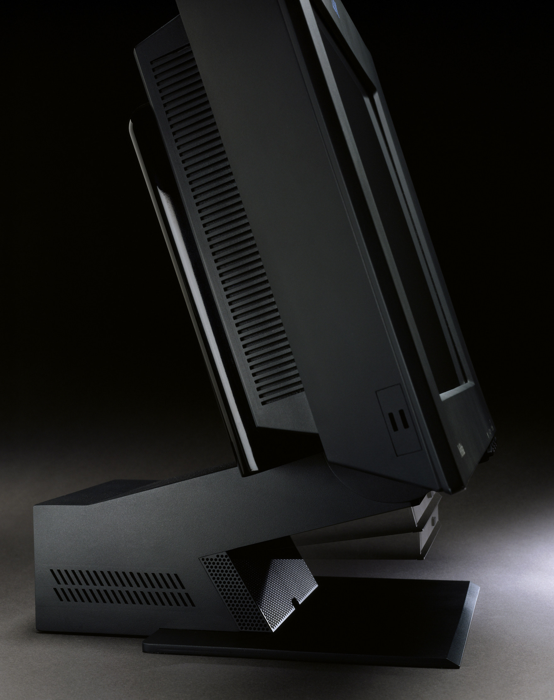
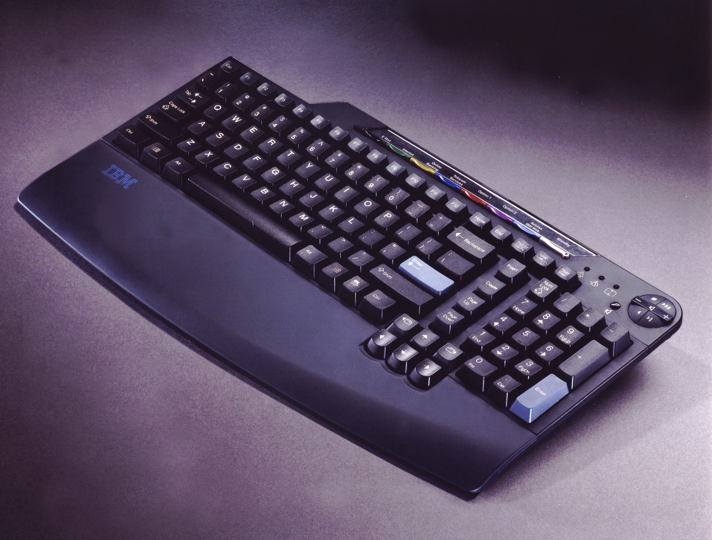

Work / IBM NetVista All in One PC 1999
Philips & IBM · 1999
IBM NetVista All in One PC 1999

Work / IBM NetVista All in One PC 1999
Philips & IBM · 1999
IBM NetVista X40 all in one PC
Role: Team Member iF award winner IDEA silver award winner Exhibited at the MOMA in the Work spheres exhibit. This was a project where we worked in conjunction with Richard Sapper.
See story about my time with Richard Sapper here.
Rear view of the "scuba tanks"
Detail shot of the "snake".
Rapid Access Keyboard designed to go with the all in one. The buttons across the top were called the "coral snake".




